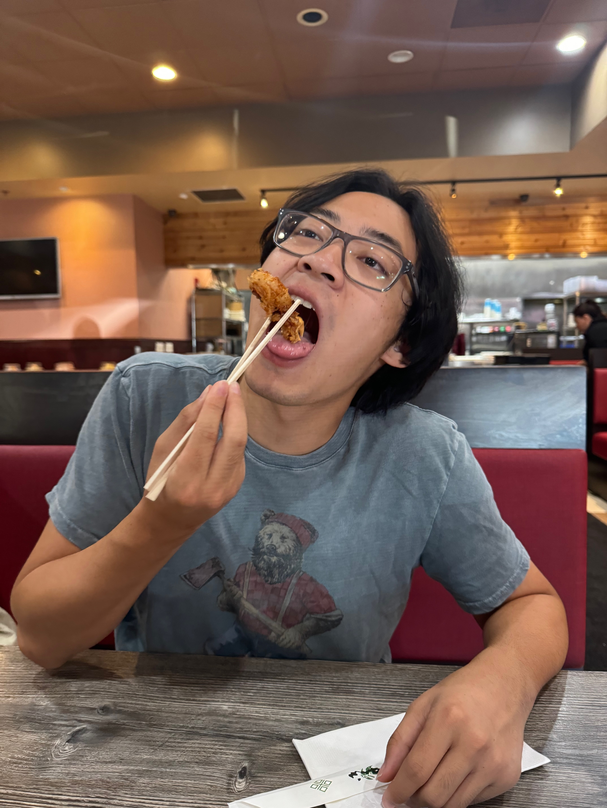

Hello! I'm Tristan Suwito, a first year at the University of Washington. As of right now, my main goal is getting admitted into the Computer Science program. I'm also working on improving my technical skills and exploring my curiousity with programming. I really enjoy the problem-solving and logical thinking that comes with computer science—it’s both challenging and rewarding. This website is part of a Udemy course I’m taking to further explore the world of programming and its many nuances. I’m excited to continue learning and growing in this field.
